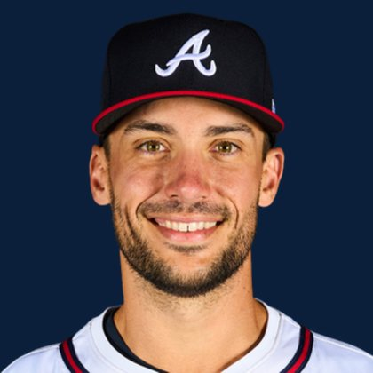

BASEBALLKEEP
Dynasty · Redraft · Diamond
Player File · 1B ATL

Matt Olson
#28 · 1B · Atlanta Braves · age 32 · B/T LR · 6' 4" / 225 lbs · MLB debut 2016 · Atlanta, USA
Hitting
| Year | G | AB | R | H | 2B | HR | RBI | SB | BB | SO | AVG | OBP | SLG | OPS |
|---|---|---|---|---|---|---|---|---|---|---|---|---|---|---|
| 2026 | 127 | 491 | 89 | 129 | 31 | 36 | 77 | 4 | 56 | 139 | .263 | .340 | .546 | .886 |
| 2025 | 162 | 624 | 98 | 170 | 41 | 29 | 95 | 1 | 91 | 176 | .272 | .366 | .484 | .850 |
Plus
- Keep #31 — still a building-block name on the 300.
- Average 30.26 across 23 boards.
- Lineup #24 among dynasty bats.
- On 23 boards — not a one-list darling.
- 36 homers in 2026. The counting stats match the rank.
Minus
- The rank is the comment until the next IL stint.
BaseBallKeep Take
Matt Olson is #31 on BaseBallKeep's overall dynasty 300, a 23-source mix anchored by RotoGraphs (Aug 14) and The Dynasty Guru points list (Aug 10). 1B for ATL. Lineup #24. Rest-of-season redraft #30. MLB since 2016. From Atlanta / USA. Bats L, throws R.
BK Value on this rank is 3,942. Same decaying curve as football: 12,000 at 1.01, a late first a fraction of that. If someone is asking for two firsts, run the calculator. 2026 line: .263 / 36 HR / 4 SB / .886 OPS in 127 games.
The 23-board average is 30.26 on 23 lists that actually ranked him — unranked sources are skipped, never treated as 999. High 22, low 46.
Dynasty pays the next five years. Redraft pays September. If those two ranks diverge, that is the instruction: hold the kid or cash the veteran.
Flags fly forever. We will refresh this file with The Keep. September baseball is a proving ground, not a coronation.
Every Board
Spread 22–46 · 23 sources
| Source | Rank |
|---|---|
| TDG Points | 22 |
| RotoWire | 22 |
| FanGraphs The Board | 22 |
| Dynasty League Baseball | 26 |
| ESPN | 27 |
| NFBC ADP | 27 |
| Mastersball | 27 |
| Yahoo Fantasy | 27 |
| ATC ROS | 27 |
| Four-Seam Fantasy | 28 |
| CBS Sports | 29 |
| Ottoneu | 29 |
| The Athletic | 29 |
| Fantasy Baseballers | 29 |
| FantasyPros Dynasty ECR | 30 |
| Baseball Prospectus | 31 |
| The Dynasty Dugout | 31 |
| Baseball America | 31 |
| MLB Pipeline mix | 31 |
| Pitcher List | 36 |
| RotoGraphs Model | 43 |
| Razzball | 46 |
| Enos Slaughter | 46 |
On The Keep nearby — Pete Alonso (#29) · Konnor Griffin (#30) · Francisco Lindor (#32) · Ben Rice (#33)
Same position on the 300 — Nick Kurtz #9 · Pete Alonso #29 · Vladimir Guerrero Jr. #41 · Munetaka Murakami #55 · Rafael Devers #57 · Jonathan Aranda #59
All players · The Keep · The Lineup · Pitchers · Calculator